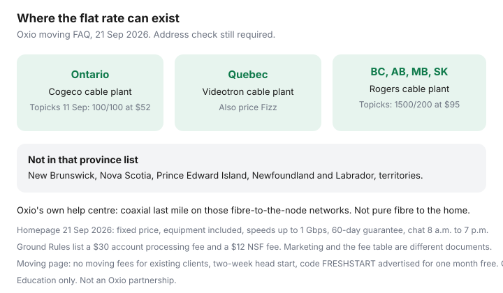

Internet · Canada
Oxio Internet Explained: Flat Rates, Free Router, and the Provinces It Actually Serves
Oxio’s pitch is the opposite of a promo cliff: one monthly price, no term, equipment included, leave when you want. That pitch is real enough to put on a shortlist. It is also narrower than “internet in Canada.” Oxio wholesales cable plant in six provinces, the modem is theirs, upload is whatever that cable tier allows, and a Big-3 winback or TekSavvy’s first-year credit can still be cheaper. This is the map. Education only. No Oxio partnership.
Disclosure: Mesh Wi-Fi systems and ethernet switches are offer types if one included router cannot cover the home. Oxio rents extra pods; buying your own mesh is a hardware choice, not an ISP deal. Saving Optimizer does not claim a live commission on those categories or on Oxio service.
Key takeaways
- Oxio’s moving FAQ (21 Sep 2026) names six provinces: Ontario, Québec, Manitoba, Saskatchewan, Alberta, British Columbia. Wholesale pattern used in 11 Sep 2026 comparisons: Cogeco in Ontario, Videotron in Québec, Rogers in the West.
- Homepage the same day: fixed price, no term, equipment included, no sneaky setup fees, speeds up to 1 Gbps, 60-day guarantee, chat or text 8 a.m. to 7 p.m. The address sets the price.
- Their help centre says the last mile is coaxial on those networks (fibre to the node, not fibre to the home) and that you cannot bring your own modem. Extra eero or pod units can cost rent.
- Ground Rules, reviewed 21 Sep 2026, list a $30 account processing fee and $12 for a rejected payment. Read that table beside the “no fees” headlines.
- Oxio loses when you need phone support, symmetrical fibre, Atlantic coverage, Fizz’s Québec price, or a written winback that beats the flat 24-month total.
How Oxio wholesales (Cogeco ON, Videotron QC, Rogers West)
Oxio does not own the line into the house. Its help centre (article updated 17 Sep 2025, still the public explanation as of this draft) says service uses the coaxial last mile on Rogers, Videotron, and Cogeco infrastructure, and describes that as fibre-to-the-node: glass to the neighbourhood, copper coax for the last stretch. They contrast that with “pure fibre.” Outages and busy-hour slowdowns belong to that plant. Oxio’s own backbone is a separate brag. It does not turn cable upload into Bell Pure Fibre upload.
Topicks.ca (updated 11 Sep 2026) assigns the plant by province the same way: Cogeco in Ontario, Videotron in Québec, Rogers in British Columbia, Alberta, Manitoba, and Saskatchewan. Oxio’s moving FAQ names those six provinces and no others. If you are in Halifax or Moncton, stop here and shop Eastlink, Bell, and TekSavvy.

Flat monthly price: what no promo cliff really means
The English homepage (21 Sep 2026) says the price you sign is the price you keep for as long as you stay, with no term contracts and no price hikes. That is different from TekSavvy’s 12-month credit and from Rogers’ or Bell’s term savings. It is not different from “check the address,” which Oxio prints on the same site: the address determines the final price.
Labelled comparison rows, Topicks 11 Sep 2026, not a cart we ran:
| Example | Speed down / up | Monthly | 24 months before tax |
|---|---|---|---|
| Ontario 15 | 15 / 2 Mbps | $25 | $600 |
| Ontario 100 | 100 / 100 Mbps | $52 | $1,248 |
| Ontario 500 | 500 / 200 Mbps | $79 | $1,896 |
| Ontario gigabit | 1000 / 200 Mbps | $85 | $2,040 |
| West 1.5 Gbps | 1500 / 200 Mbps | $95 | $2,280 |
On that Ontario 100 Mbps sketch, Oxio at $1,248 over 24 months beats coasting on TekSavvy Cable 100 ($38.95 then $74.95, about $1,366.80) and loses year one. Older PlanGenius tables show different Québec and gigabit tiles, including a Cogeco gigabit figure that does not match this Ontario $85 row. Do not blend blogs. Run the address tool the day you order.
Two fee-table items sit beside the slogan. Oxio’s Ground Rules page, reviewed 21 Sep 2026, lists an account processing fee of $30 and $12 for insufficient funds or a refused payment. Seasonal interruption is listed at $30, with a wait that depends on whether the backbone is Cogeco, Videotron, or Rogers. Speed changes are listed at $0. “No sneaky setup fees” on the homepage is not a promise that every line on Ground Rules is $0. Read both.
Included eero/router economics vs rental elsewhere
Oxio’s modem article says you cannot use a personal modem or one from a previous provider; they lend a certified modem at no extra charge. Router models they name include Adtran 841, eero 6, and an oxio Wi-Fi pod. You may use your own router. You may add up to two extra oxio routers or eero 6 units, and the article says rental fees apply to those extras.
Against a Big-3 gateway line (community bills around $10, or Rogers’ $25/month Wi-Fi 7 upgrade advertised 21 Sep 2026), one included radio is a real save. Against a $0 TekSavvy loaner, it is a tie on the monthly and a loss if you wanted to own a DOCSIS stick. In a long or brick home, the second and third nodes are where Oxio stops being “free equipment.” A mesh system you own, fed by ethernet or a small switch, is the hardware alternative. Price two years of pod rent before you add them at checkout.
60-day money-back and moving tools
The 60-day guarantee is longer than the Internet Code’s 15-day trial, and it is a company policy, not the Code (Oxio is not on the Code’s facilities-based list). The help-centre version: first-time customers, cancel inside 60 days of activation, balance at $0, request the guarantee within 10 days of the cancellation date, refund after returned gear is scanned, then 10–12 business days back to the payment method. The homepage and Ground Rules describe it as a satisfaction refund of what you paid in that window. If you are the sort of household that needs an exit, this is the feature. If you will miss the day-60 date, it is marketing.
Moving (oxio.ca/en/moving, read 21 Sep 2026): existing clients are told a move is an address swap with no moving fees; new sign-ups are pointed at a two-week head start so gear can ship; self-install is common; remote activation is “often” available; the page advertised code FRESHSTART for one month free. Codes expire. Check the page the week you move. A move is also a new wholesale check. The flat rate does not follow you to a street Oxio cannot serve. Home phone, the same FAQ notes, is not available in every region (the site copy has limited it to parts of Québec).
Speed tiers and upload realities on cable plant
Homepage marketing says speeds up to 1 Gbps. The western comparison row above goes to 1.5 Gbps down and 200 Mbps up. Ontario 100/100 in that 11 Sep table is the rare symmetrical cable tier. Ontario 500/200 and 1000/200 are not symmetrical. A work-from-home household that uploads large files all afternoon should compare those uplinks with Bell or Telus fibre before treating “1 Gbps” as the answer. The speed worksheet is the filter. Buying 1.5 Gbps on coax because the tile looks modern, then suffering Wi-Fi, is how people overpay Oxio too.
When Oxio loses to TekSavvy, Fizz, or a Big-3 winback
- TekSavvy wins the first year on many Ontario credit tiers, wins Atlantic addresses, and wins if you want a phone. Oxio wins if you will not re-shop at month 13 and the flat 24-month total is lower. Full grid: the comparison.
- Fizz on Videotron plant in Québec can undercut both. The companion guide’s 100 Mbps-class sketch was about $45 versus a higher Videotron card. Price Fizz before you treat Oxio as the Québec discount.
- A written winback from Rogers, Bell, Telus, or Videotron wins when the email beats Oxio on 24-month CAD and you accept the term and the ETF. Use Oxio as the number you read to the agent, then leave if they only offer $10 off list.
Oxio fits people who want one price, chat support, and a cable address in those six provinces. It is not a national fibre company and not a promise that every fee table cell is zero.
Sources & date stamps
- Oxio.ca/en — fixed price, equipment included, up to 1 Gbps, 60-day guarantee, chat 8 a.m.–7 p.m., no price hikes, address sets the price. Read 21 Sep 2026.
- Oxio.ca/en/moving — six provinces, no moving fees for current clients, FRESHSTART code as advertised that day, two-week shipping guidance.
- Oxio help centre — coax on Rogers, Videotron, Cogeco (updated 17 Sep 2025); modem must be theirs; eero 6 / Adtran / pod; extra-node rental; 60-day refund steps.
- Oxio Ground Rules — $30 account processing, $12 NSF, $0 speed change, seasonal interruption $30. Reviewed 21 Sep 2026.
- Topicks.ca Oxio vs TekSavvy, updated 11 Sep 2026 — labelled plan rows and plant-by-province. Cart overrides.
Frequently asked questions
Is Oxio available everywhere in Canada?
No. Oxio's moving FAQ, read 21 Sep 2026, lists Ontario, Québec, Manitoba, Saskatchewan, Alberta, and British Columbia. New Brunswick, Nova Scotia, Prince Edward Island, Newfoundland and Labrador, and the territories are outside that list. Even inside the six provinces, the civic address has to qualify.
Does the flat rate mean the price can never change?
Oxio's English homepage on 21 Sep 2026 says fixed-price plans, no term contracts, and no price hikes, and that the address determines the final price. That is a retail promise about the plan you sign, not a law. Screenshot the cart. A move to a new street can be a different plan.
Is the router really free?
Oxio's help centre says the modem is lent at no extra charge and you cannot use your own modem. Routers they list include eero 6, Adtran 841, and an oxio Wi-Fi pod. Extra mesh units have rental fees. Included means one gateway, not whole-home coverage in a brick house.
What does the 60-day guarantee require?
Oxio's help centre: new customers, first time with Oxio, cancel within 60 days of activation, account balance at $0, ask within 10 days of the cancellation date, and return gear. The refund is after the warehouse scans the equipment, then about 10 to 12 business days. Read the current Ground Rules before you rely on it.
When should I not pick Oxio?
When you need a phone agent, when TekSavvy's after-credit 24-month total is lower and you will re-shop, when Fizz is cheaper on Québec cable, when you need symmetrical fibre uploads Bell or Telus can actually deliver, or when a written winback beats the flat rate.